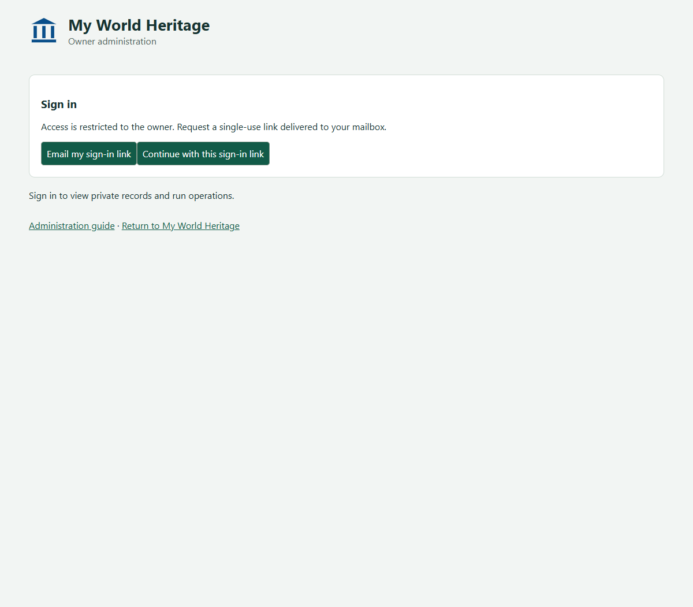
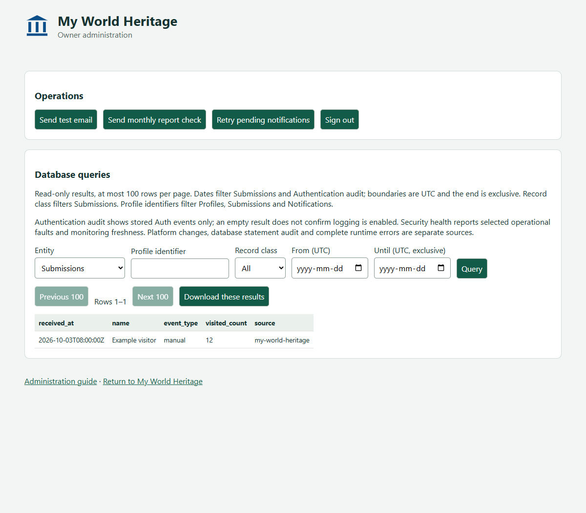

Access and authentication
The administration page and this guide are public static files. Loading them does not grant access to private data or commands. Every protected request carries a bearer token which the server verifies against the identity service; the identity must also match the configured owner UUID, fixed owner email and confirmed email state.
The sign-in bootstrap operations are deliberate exceptions: requesting a link and verifying a one-use link must be reachable before a session exists. A link request can send only to the fixed owner and is throttled. Verification returns a session only after the proof and owner identity checks succeed. Preflight requests grant no authority. Knowing the page or API address, or setting an Origin header, does not authenticate a caller.
After sign-in the client stores a token in tab session storage and memory, without a refresh token. A 401 or 403 response clears the local session and hides the workspace. Sign-out clears the token and results locally even if remote sign-out fails; local cleanup does not prove copied tokens were revoked.
Operations and results
Administration permits bounded queries and the three named mail operations shown below. It has no site, catalogue, schema, deployment or arbitrary SQL mutation operation. A timeout may leave a mail operation uncertain: inspect Action history before another click, which creates a new operation Id. Download exports only the current result page, with full timestamp precision.
Screenshots use synthetic data. Select an image to open it at full size.
Administration sign-in
Figure Administration sign-in shows this view. Table Administration sign-in controls describes its controls and displayed information.

| Control or information | Contents | Behaviour |
|---|---|---|
| Email my sign-in link | Fixed-owner sign-in request | Request the owner email, subject to throttling |
| Continue with this sign-in link | Shown when a challenge was captured from the URL | Verify the one-use link and establish a tab session |
| Status | Sign-in progress or errors | Read the outcome |
| Administration guide | Operator documentation link | Open this guide in another tab |
| Return to My World Heritage | Visitor application link | Leave administration |
Administration workspace
Figure Administration workspace shows this view. Table Administration workspace controls describes its controls and displayed information.

| Control or information | Contents | Behaviour |
|---|---|---|
| Send test email | Named owner command | Send a delivery test through the configured worker |
| Send monthly report check | Named owner command | Request the previous-month report with its labelled current-month check |
| Retry pending notifications | Named owner command | Ask the delivery worker to process eligible pending work |
| Sign out | Current owner session | Request remote sign-out and clear local token/results even if the request fails |
| Status | Request progress, accepted operation Id or error | Inspect uncertain commands in Action history before retrying |
| Entity | Submissions, Profiles, Notifications, Action history, Authentication audit, Security health, Schema columns, Database status or Workflow status | Choose a bounded query; there is no generic SQL control |
| Profile identifier | Optional identifier filter | Applies to Profiles, Submissions and Notifications |
| Record class | All, activity, test or synthetic | Applies to Submissions |
| From / Until (UTC) | Optional date boundaries; Until is exclusive | Applies to Submissions and Authentication audit |
| Query | Selected entity and relevant filters | Start at the first page of results |
| Previous 100 / Next 100 | Database result pagination | Move between bounded pages; controls disable when not applicable |
| Row label | Range in the current returned array | Read result position |
| Results table or value | Returned fields; displayed times omit fractional seconds | Scroll to inspect content; Schema puts data type after column name |
| Download these results | Current raw result only | Save JSON with full timestamp precision; does not export all pages |
| Administration guide | Operator documentation link | Open this guide in another tab |
| Return to My World Heritage | Visitor application link | Return to the public map |
Private outputs and limitations
Downloaded results are private copies with their own access and retention obligations. Authentication audit shows stored events, not proof that all logging is enabled. Security health covers selected faults, not every runtime or platform event. The administration and visitor pages currently share an origin; separate paths do not establish browser isolation.
The security concerns review distinguishes confirmed defects, known exposures and unverified possibilities.